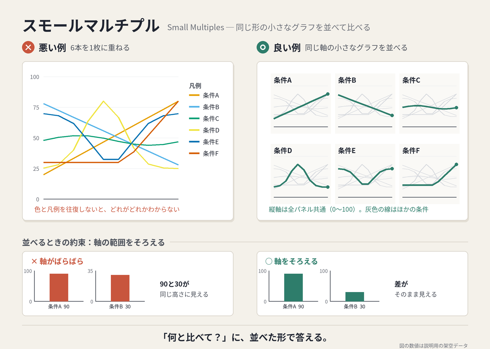

第11回
スモールマルチプル
Small Multiples

どういう知識か
スモールマルチプルは、同じ形で同じ軸のグラフを小さくして、格子のように並べる表し方です。条件ごと、地域ごと、年ごとに1枚ずつ描き、並べることで違いを見せます。この呼び名を広めたのは、統計グラフィックスの研究者エドワード・タフティです。
タフティは『Envisioning Information』（1990）で、量のデータを考えるときの核心は「何と比べて？」という問いであり、スモールマルチプルはその比較を目に見える形で直接示すと述べています。読み手は1枚目で読み方を覚えれば、残りは変わったところだけを見ればよくなります。
大事な約束は、すべてのパネルで軸の範囲と目盛りをそろえることです。クラウス・ウィルケは『Fundamentals of Data Visualization』（2019）で、読み手はパネルの軸がそろっていると期待するので、そろっていないと誤読されやすいと注意しています。
具体例
悪い例：6つの条件の推移を、1枚の折れ線グラフに6色で重ね、凡例を右に置きます。線が何度も交差し、読み手は色と凡例を往復しないと、どの線がどの条件かわかりません。
良い例：条件ごとに小さなパネルに分け、縦軸を0〜100にそろえて3×2に並べます。各パネルでは主役の1本だけに色をつけ、ほかの条件は薄い灰色で背景に残します。上がる、下がる、山がある、といった違いが形で見え、全体の中での位置もわかります。
もうひとつの落とし穴：パネルごとに縦軸の上限を変えると、90と30が同じ高さに見えてしまいます。
今日から使えるひとこと
線が4本を超えて絡んでいるグラフを1枚見つけたら、条件ごとのパネルに分けてみてください。R の ggplot2 なら facet_wrap()、Python の matplotlib なら plt.subplots(sharey=True) で、軸をそろえたまま並べられます（facet_wrap() は初期設定で軸がそろいます）。パネルの並び順は、比べてほしい順にします。
出典
- Envisioning Information https://www.edwardtufte.com/book/envisioning-information/ p.67。「何と比べて？」とスモールマルチプルの説明。本文の言葉は英文をもとにした要約です
- The Visual Display of Quantitative Information https://www.edwardtufte.com/book/the-visual-display-of-quantitative-information/ 第8章「Data Density and Small Multiples」
- Fundamentals of Data Visualization（第21章 Multi-panel figures） https://clauswilke.com/dataviz/multi-panel-figures.html パネル間で軸の範囲と目盛りをそろえる理由